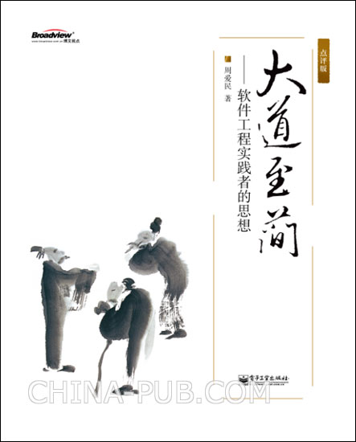

:)
广个告先【china-pub书讯】：http://www.china-pub.com/196277

【前天拿到这本书的纸版了，印得不错。封面的风格也很谐调，开心ing...】
与读者们谈谈《大道至简》这五年
《大道至简》第三版（点评版）终于出版了，我得了点空想来写些东西——无论是回顾或者反思，都是必要的。但是真当我开始在键盘上敲字的时候，却连个标题都拟不出来。
我不是个“出书”的人，也不是一个“作家”。08年在北京的时候，因为没具体工作，所以一些社会活动里用了“技术作家”这个头衔，现在想起来，颇为后悔：我的主职，离作家这个角色其实很远。
但我的确写书。我常常给我的朋友们提到，我写第一本书（《Delphi源代码分析》）的时候，都没有考虑过能不能出版——即使不能出，就发成电子版好了。我写源代码分析，仅仅是因为我想那样做，并且认为努力一点，终可以做得到。直到后来写《大道至简》以及《JavaScript语言精髓与编程实践》都是这样的心态。先摆正了心态，再来做事，再来做人，再来说我做成了什么样子，我觉得，这样一步步地来讲，才是一个程序员的讲法。
首先很抱歉，这三本书，没有一本是“为读者写的”，或者写给“看”书的人看的。看书，有人着眼厚薄，有人着眼纸质，有人着眼文字上的好坏或功夫，这些都有。我当然也都在乎，出版社用的纸不好了、编辑对文字上改过了火，这些我也都是要说的。但是这些都不是因为“读者喜欢”，而是因为我想认真地对事对人，想认认真真的出版一本书。这么些年，我发给杂志社、出版社的稿件，甚至于电子邮件，我都会花不少的工夫排版、校订，我觉得那是一件事，该尽力做细。如同这三本书，我也只是把他们当成几件事情，决定了要做，就做细。没别的什么原因，动机，或者动力。
回到《大道至简》。一本书，出了三版，有很多人喜欢，也不少批评。但我很快就冷静了下来，不再回应读者们的观点。但在这个过程中，我的确发现最初版本的《大道至简》不够完整与严谨，于是在第二版，我补写了两章三节，说清楚工程中的“管理”问题，以及如何认识“语言不过是工具”的问题。而到了第三版，我又补写了一章，只为了说清楚“工程不是做的，是组织的”这个问题。所以到现在这一版，“工程层状模型（EHM）图”中的各个环节，才算是真的说清楚了，才算对这本书有了一个完完整整的交待。如同我上面说过的，这并不是“为了读者”，而是出于对“写一本书”这件事情的尊重。
很多朋友与我谈到古文，包括评论《大道至简》这本书中引用的、撰写的古文。但我事实上不是古文方面的行家(*1)。我读书也多以现代的、技术类的书为主，兼读一些哲学的、历史的和社会学的。但总体来说，我读书不多，因为我读得太慢，一本书可能要读好几个月。我手边的书多在收集、整理、归目，这对我写东西来说，是有好处的。更确切的说，我读书的目的，多是为了解决问题和写书写文章，而非乐趣。求知并不是什么乐趣的事情，思考也不是什么乐趣的事情，同样，写古文也不是什么乐趣的事情。而我毕竟在《大道至简》中写了、引用了大量的古文。为什么？因为，那些古文也是我讨论工程问题的一条暗线(*2)。我甚至认为，在第二版中加入的“愚公移山记-续”，所讨论的工程问题比全书所论的更加重要，所以我才又写了一篇“幕后”，来细述这些(*3)。
但凡一件事情，我们都该有自己的观点。对于这观点，应该先说清楚它，再坚持它，再尝试否定它。《大道至简》一书三版，便是我在说清楚自己的观点。而我这五年来沉默与坚持，便是不断地向自己挑战：我说得对吗？我在陈述一种什么样的道？这是道吗？这是未来吗？这是方向吗？以及，这一切或许原本就是错的？！
我看过几乎所有网友对这本书的评论，感谢大家。但回到我对自己的质问上，我仍然有自己的观点：《大道至简》是工程的一个方面，是实践者的一个可能的视角，但不是全部。仅从这个方面、视角看去，软件工程就是这样的一个格局，解决的以及面临的就是这样的一些问题。而我，在这格局与问题面前，给出的就是这样的一个答案。所以，事实上我请六位专家好友一起来点评这本《大道至简》的时候，“对专家所论，我不予反驳”这一主张，非但是出版所需，也实在是我无法反驳什么。因为在EHM这个视角上，我的观点就是那些，没有超越，也无有藏私。观点与看法就摆在那里，大家请畅所欲言(*4)。
很多东西，谁都懂，做的时候却总是不停地犯错，那是为什么？因为我们太重于“具体的方法”，而忘了看一看“具体的问题”，以及问题背后的真相。这些问题与真相，就是《大道至简》要说给大家的。而我，则时时在反思我之于工程的观点，并在工作中去实践他们、应用他们。我看到的现实问题，离《大道至简》所述的并无背离，甚至有些错误总在一遍又一遍地重演(*5)。我自己也在一点点地尝试、寻求解决之道，毕竟《大道至简》更多的只是给出了问题以及原则，而无有答案。我们怎么思考，怎么实践，怎么做一个具体的工程，还是在我们自己的手边、脚下，以及心中。
很感谢这一版中的点评专家、好友们，谢谢大家的支持；感谢在这几年中给我发来邮件的读者朋友们，谢谢你们的关注；感谢博文视点的编辑、编审与工作人员们，谢谢大家努力、细致的工作。更要感谢一直以来支持我、鼓励我、帮助我的周筠老师。七年时间、三本书，感谢周老师在这崎岖不平的著书出书道路中，予我无私的扶植与帮助，予我至微的关怀与开导。许多朋友并不知道，为消除“古文过多”的问题，周筠老师遂字遂句的批改过这本书——现在这本书读起来能令人更愉快一些，也是有周老师的功劳的。呵呵。
虽然我不是作家，但写书这件事，我仍将持续下去。如我一向说的，写书于我而言，只是一件事，只是思考的一个过程和工具，以及阐述我对于软件开发、工程与架构的观点的一种方式。很抱歉我不能以读者为先，写出一本标题上看来、或文字上读来让读者愉悦的书。但反观如今的出版市场（请注意我强调市场这个词），真正认真“写书”的又有几个呢？把书当成一回事，而不是一个道具的人又有几个呢？写书、出书等等，连自己要做的事都不尊重，连自己的言行与观点都不能负责，那么高喊着“为读者写书”、“写出读者爱看的书”等等，也不过是高阔之谈论，或市利之烟尘罢了。
在我正在写第四本书的过程中(*6)，谨以此文回顾我这些年来的经历，并向读者们坦陈我对书的、写作的感受。再一次请读者们原谅，愿大家能喜欢这样一个认真写书的人，以及认真写的书。
其它(一)
《大道至简》这本书五年来出了三版，大概如下：
- 2004.11.01 - 2005.03.22，开始写“大道至简”第一版至完稿。
- 2005.11.06，第一版（电子版）发布。
- 2006.06 - 2006.12，开始写第二版至完稿。
- 2007.03，第二版，电子工业出版社出版。
- 2009.08 - 2009.11，开始写第三版至完稿。
- 2010.01，第三版（点评版），电子工业出版社出版。
其它(二)
(1) 与任真先生校订“愚公移山”的邮件
(4) 旧文重发：行在道上，从局部到全局——与师者高焕堂、赵善中先生谈《大道至简》
(5) 本来面目——大教堂、集市，与作坊
(6) 第四本书是讲Erlang语言的，暂订名为《Erlang开发全景》，是由浅入深的一本书，现在有写到100多页。另外，第五本书是在规划中，应该与架构和工程都相关的，与《大道至简》是一个系列，将架构等其它角色纳入工程的范围来讨论，目前有近百页的初稿在写。^.^